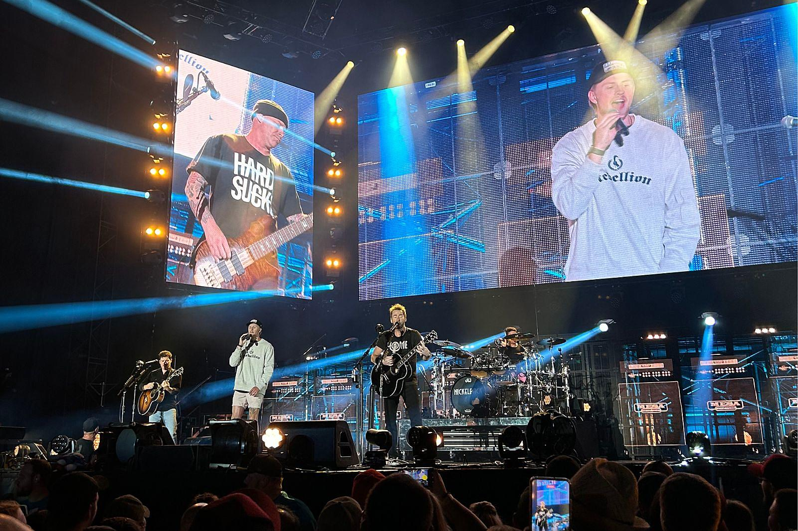

Nickelback je kanadská rocková kapela, která vznikla v roce 1995 ve městě Hanna, Alberta. Skupina je známá svými chytlavými rockovými písněmi a komerčním úspěchem, přičemž jejich největší hity zahrnují skladby jako "How You Remind Me", "Photograph" a "Rockstar". I přes kritiku ze strany některých hudebních kritiků, kteří jejich zvuk považují za příliš komerční nebo stereotypní, má Nickelback obrovskou fanouškovskou základnu a miliony prodaných alb po celém světě.
Byli jednou z prvních kapel, které využily internet a sociální sítě k propagaci své hudby v počátcích 21. století. V roce 2000, kdy začínali, byli jedni z prvních, kdo použil internet k šíření své hudby a zajištění přístupu k fanouškům. Tato strategie byla jedním z klíčových faktorů jejich rychlého vzestupu k popularitě, a přispěla k tomu, že se jejich album Silver Side Up stalo v roce 2001 obrovským komerčním úspěchem, s hitem "How You Remind Me", který se stal jednou z nejhranějších písní na amerických rádiích.